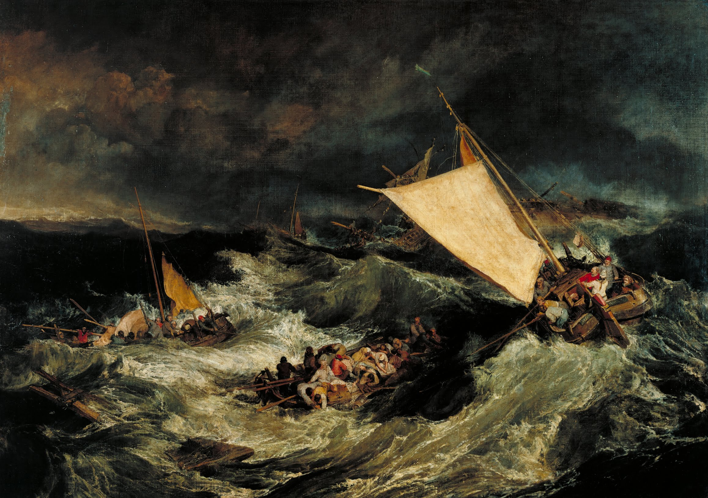
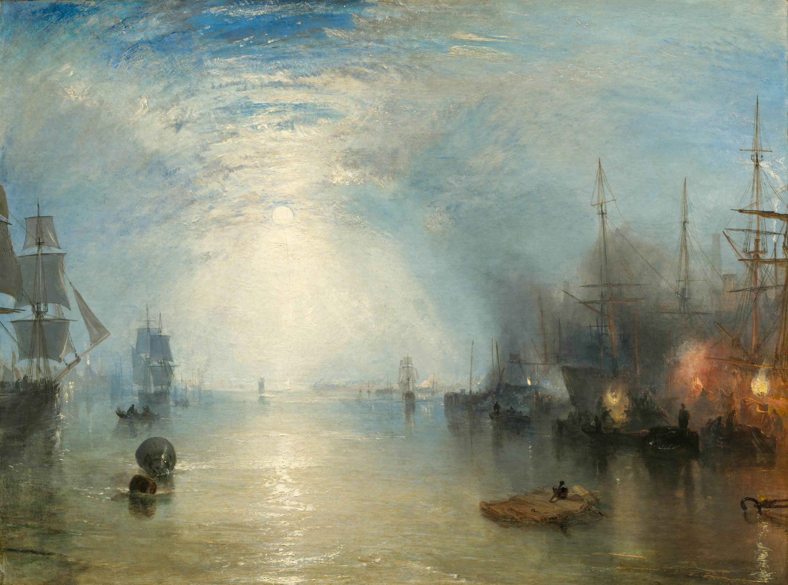
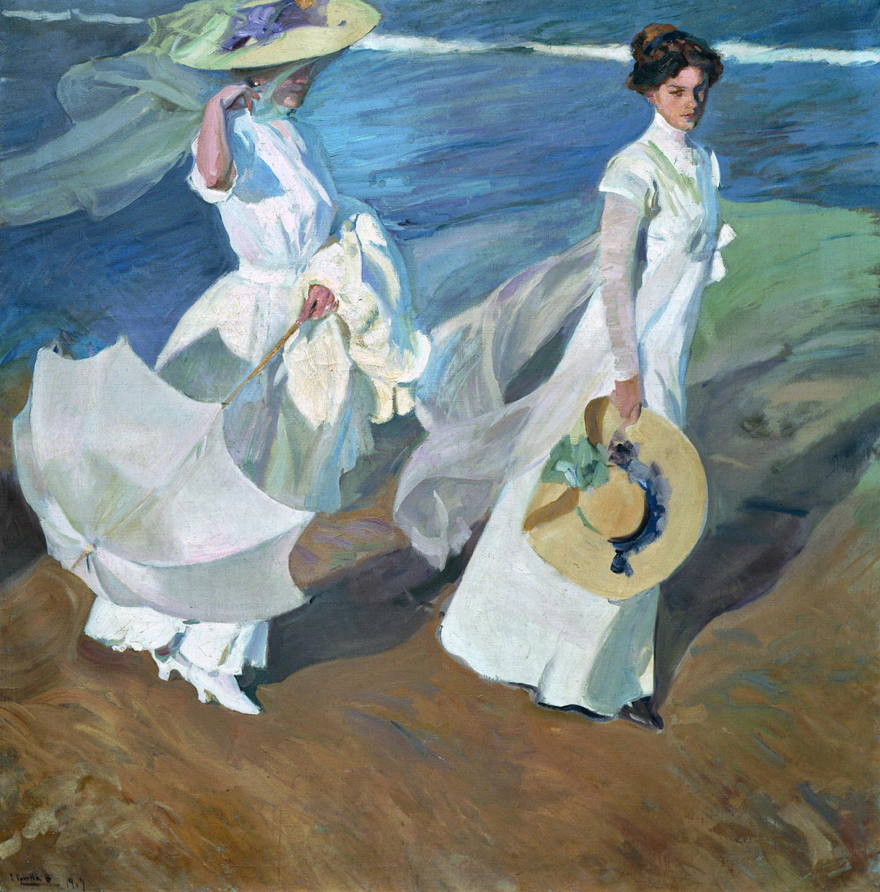
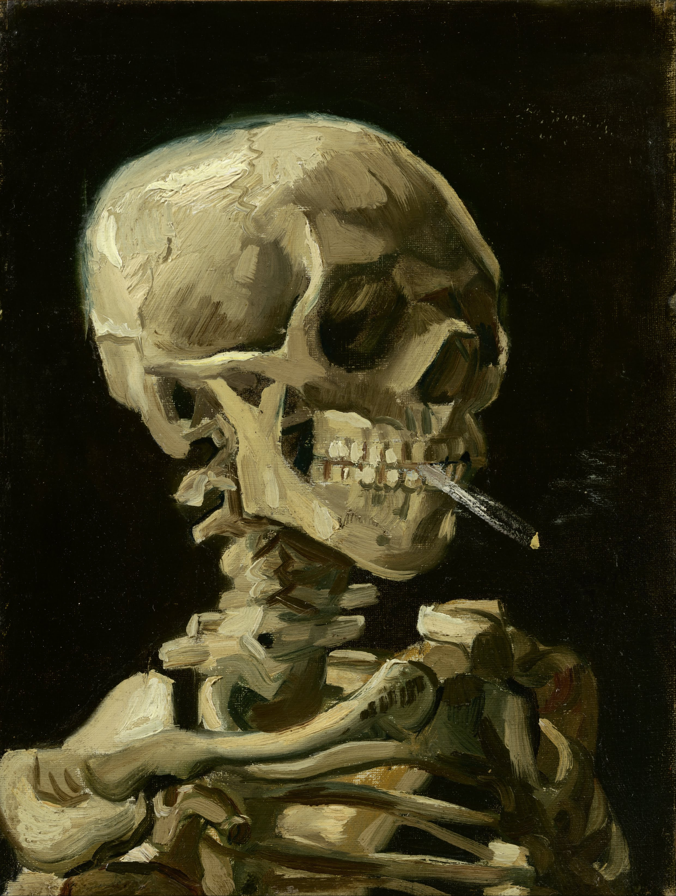

Syria, Ruins by the Sea
- Autor: Frederic Edwin Church
- Año de creación: 1870
- Descripción: Un paisaje pintoresco que representa ruinas cerca del mar, destacando la grandiosidad del cielo y las texturas arquitectónicas.

Knight at the Crossroads
- Autor: Viktor Vasnetsov
- Año de creación: 1878
- Descripción: Representa a un caballero medieval enfrentando una encrucijada, con un enfoque en la mitología y simbolismo del romanticismo ruso.
A Dream of Italy
- Autor: Robert S. Duncanson
- Año de creación: 1865
- Descripción: Un paisaje idealizado que evoca la belleza y serenidad de Italia, influenciado por el romanticismo del siglo XIX.
A View near Tivoli (Morning)
- Autor: Thomas Cole
- Año de creación: 1832
- Descripción: Una obra del fundador de la Escuela del Río Hudson, mostrando una vista romántica de Tivoli al amanecer.

Among the Sierra Nevada, California
- Autor: Albert Bierstadt
- Año de creación: 1868
- Descripción: Un paisaje épico que captura la majestuosidad de las montañas de Sierra Nevada con una luz sublime y detalles espectaculares.
The Rocky Mountains, Lander's Peak
- Autor: Albert Bierstadt
- Año de creación: 1863
- Descripción: Una de las obras más célebres de Bierstadt, que retrata la belleza salvaje de las Montañas Rocosas con dramatismo romántico.
Canadian Rockies (Lake Louise)
- Autor: John Singer Sargent
- Año de creación: 1916
- Descripción: Una representación serena y majestuosa del lago Louise en las Montañas Rocosas canadienses, destacando la belleza natural de la región.

The Cardsharps
- Autor: Caravaggio (Michelangelo Merisi)
- Año de creación: 1594
- Descripción: Una escena cargada de tensión y realismo que muestra a un joven siendo engañado en un juego de cartas, ejemplificando el dramatismo del estilo barroco.

Abadía en el Robledal
- Autor: Caspar David Friedrich
- Año de creación: 1810
- Descripción: Un paisaje romántico que muestra una abadía en ruinas rodeada de un bosque sombrío, simbolizando la fugacidad de la vida y la espiritualidad.

El Árbol Solitario
- Autor: Caspar David Friedrich
- Año de creación: 1822
- Descripción: Una composición que resalta la soledad y la conexión entre el hombre y la naturaleza, con un árbol solitario en un paisaje rural.

Mujer con Sombrilla
- Autor: Claude Monet
- Año de creación: 1875
- Descripción: Una escena al aire libre que retrata a la esposa de Monet y su hijo, capturando la luz y el movimiento característicos del impresionismo.

La Consumación del Imperio
- Autor: Thomas Cole
- Año de creación: 1836
- Descripción: Parte de la serie *El Curso del Imperio*, muestra la grandeza y el apogeo de una civilización, resaltando la fragilidad del poder humano.

La Destrucción del Imperio
- Autor: Thomas Cole
- Año de creación: 1836
- Descripción: Representa la caída de una civilización en medio de la guerra y el caos, subrayando las consecuencias de la ambición desmedida.
Composición A
- Autor: Piet Mondrian
- Año de creación: 1920
- Descripción: Un ejemplo del neoplasticismo, donde Mondrian utiliza formas geométricas puras y colores primarios para expresar equilibrio y armonía.

Salisbury Meadows
- Autor: John Constable
- Año de creación: 1831
- Descripción: Un paisaje bucólico que captura la tranquilidad y la belleza de los campos ingleses, con énfasis en el cielo y los efectos de la luz.
Aurora Boreal
- Autor: Frederic Edwin Church
- Año de creación: 1865
- Descripción: Una escena impresionante que muestra el fenómeno de la aurora boreal sobre un paisaje ártico, destacando la majestuosidad de la naturaleza.

Cataratas del Niágara, desde el lado americano
- Autor: Frederic Edwin Church
- Año de creación: 1867
- Descripción: Una vista majestuosa de las cataratas del Niágara que refleja la fuerza y la inmensidad de la naturaleza, característica del romanticismo americano.

Estación de lluvias en los trópicos
- Autor: Frederic Edwin Church
- Año de creación: 1866
- Descripción: Un paisaje tropical vibrante que captura el drama de una tormenta tropical y la exuberancia de la vegetación en climas cálidos.

Gótico americano
- Autor: Grant Wood
- Año de creación: 1930
- Descripción: Una icónica representación de la vida rural americana, famosa por su simbolismo y los rostros serios de sus protagonistas.
Acantilados del río Green, Wyoming
- Autor: Thomas Moran
- Año de creación: 1874
- Descripción: Un paisaje occidental que muestra los acantilados del río Green, representando la belleza de las tierras inexploradas de América.
Colibrí y flores de manzano
- Autor: Martin Johnson Heade
- Año de creación: 1875-1885
- Descripción: Una obra delicada que combina el estudio científico de la naturaleza con el arte, mostrando un colibrí entre flores de manzano.

Stańczyk
- Autor: Jan Matejko
- Año de creación: 1862
- Descripción: Un retrato melancólico del bufón real Stańczyk, simbolizando la preocupación por el destino de Polonia en un momento histórico crítico.
El Vesubio en erupción
- Autor: Joseph Mallord William Turner
- Año de creación: 1817-1820
- Descripción: Una representación dramática de la erupción del monte Vesubio, destacando el poder destructivo y la belleza sublime de la naturaleza.

El naufragio
- Autor: Joseph Mallord William Turner
- Año de creación: 1805
- Descripción: Una escena marítima que muestra el caos de un naufragio, combinando emoción y técnica en la pintura romántica.

Cargadores de carbón a la luz de la luna
- Autor: Joseph Mallord William Turner
- Año de creación: 1835
- Descripción: Un paisaje nocturno que captura la actividad industrial con un ambiente etéreo y poético.
Cristo en el desierto
- Autor: Ivan Kramskoi
- Año de creación: 1872
- Descripción: Un retrato contemplativo de Cristo en el desierto, representando su lucha espiritual y soledad.

La joven de la perla
- Autor: Johannes Vermeer
- Año de creación: 1665
- Descripción: Un retrato íntimo y cautivador conocido como la “Mona Lisa del Norte,” destacando el uso magistral de la luz y el color.

Mirando hacia el valle de Yosemite
- Autor: Albert Bierstadt
- Año de creación: 1865
- Descripción: Una vista panorámica del valle de Yosemite, destacando la grandeza y la majestuosidad de la naturaleza americana.
La montaña de la Santa Cruz
- Autor: Thomas Moran
- Año de creación: 1875
- Descripción: Un paisaje que combina realismo y simbolismo, representando la montaña de Colorado conocida por su distintivo patrón de cruz de nieve.

Paseo a orillas del mar
- Autor: Joaquín Sorolla
- Año de creación: 1909
- Descripción: Una obra luminosa y vibrante que representa a dos figuras paseando por la playa, destacando el dominio de Sorolla en capturar la luz y el movimiento del mar.
Praderas de Newburyport
- Autor: Martin Johnson Heade
- Año de creación: 1876-1881
- Descripción: Un paisaje tranquilo que muestra las praderas de Newburyport al atardecer, reflejando la serenidad y la atención al detalle características de Heade.

Composición II en rojo, azul y amarillo
- Autor: Piet Mondrian
- Año de creación: 1930
- Descripción: Una obra clave del neoplasticismo, donde Mondrian utiliza líneas negras, colores primarios y formas geométricas para expresar armonía y equilibrio.
Composición n.º 10
- Autor: Piet Mondrian
- Año de creación: 1939-1942
- Descripción: Una evolución del estilo de Mondrian, con mayor énfasis en las líneas negras y la fragmentación de las formas para explorar nuevas composiciones abstractas.

Cristo en la tormenta en el lago de Galilea
- Autor: Rembrandt van Rijn
- Año de creación: 1633
- Descripción: Una representación dramática del milagro bíblico, destacando el dominio de Rembrandt en el uso de la luz y la emoción.

Daniel en el foso de los leones
- Autor: Peter Paul Rubens
- Año de creación: 1614-1616
- Descripción: Una escena bíblica que muestra la fe y la serenidad de Daniel entre los leones, con la teatralidad y el dinamismo característicos de Rubens.
El mar Egeo
- Autor: Frederic Edwin Church
- Año de creación: 1877
- Descripción: Una vista idealizada del mar Egeo, combinando elementos históricos y geográficos en una obra que captura la majestuosidad del paisaje.
La mañana de la ejecución de los Streltsy
- Autor: Vasily Surikov
- Año de creación: 1881
- Descripción: Una representación dramática de un momento clave en la historia rusa, destacando la tensión emocional y la riqueza de detalles históricos.
El viejo pino, Darien, Connecticut
- Autor: John Frederick Kensett
- Año de creación: 1872
- Descripción: Una escena tranquila que celebra la majestuosidad del paisaje americano, con un enfoque en la luz y la atmósfera.

El Partenón
- Autor: Frederic Edwin Church
- Año de creación: 1871
- Descripción: Una representación imponente de la antigua Grecia, con un enfoque romántico en el Partenón como símbolo de la grandeza clásica.

Los icebergs
- Autor: Frederic Edwin Church
- Año de creación: 1861
- Descripción: Un paisaje épico que destaca la grandeza y la desolación de los icebergs en un entorno ártico.

Las vísperas del indio
- Autor: Asher Brown Durand
- Año de creación: 1847
- Descripción: Una representación romántica de un nativo americano en un entorno natural, que refleja la relación espiritual entre el hombre y la naturaleza.
El valle de Lackawanna
- Autor: George Inness
- Año de creación: 1855
- Descripción: Una obra que combina el paisaje rural con la industrialización emergente, mostrando una transición en la América del siglo XIX.
Acantilados del río Green
- Autor: Thomas Moran
- Año de creación: 1874
- Descripción: Un paisaje monumental que celebra la belleza y la escala impresionante de los acantilados del oeste americano.
La gran ola de Kanagawa
- Autor: Katsushika Hokusai
- Año de creación: 1831
- Descripción: Una de las obras más icónicas del ukiyo-e, representa una ola inmensa en el océano, con el monte Fuji en el fondo, simbolizando la fuerza de la naturaleza.
La batalla de Trafalgar
- Autor: J. M. W. Turner
- Año de creación: 1822
- Descripción: Una representación épica y dramática de la famosa batalla naval, destacando la interacción de la luz y el movimiento en el mar.

Suvorov cruzando los Alpes
- Autor: Vasily Surikov
- Año de creación: 1899
- Descripción: Una representación heroica de la campaña militar de Suvorov, capturando el desafío y la grandeza de cruzar los Alpes.

Vista de Delft
- Autor: Johannes Vermeer
- Año de creación: 1660-1661
- Descripción: Una obra maestra que retrata la ciudad de Delft, destacando la precisión y el equilibrio en la luz y la composición.
La lechera
- Autor: Johannes Vermeer
- Año de creación: 1657-1658
- Descripción: Un retrato íntimo y sereno de una mujer vertiendo leche, con un enfoque en los detalles y la luz.

Almendro en flor
- Autor: Vincent van Gogh
- Año de creación: 1890
- Descripción: Un símbolo de esperanza y renacimiento, esta obra destaca por su delicadeza y sus colores vibrantes.

Cráneo con un cigarro encendido
- Autor: Vincent van Gogh
- Año de creación: 1885-1886
- Descripción: Una obra inusual y sarcástica que combina humor negro y elementos académicos.
Viento del sur, cielo despejado
- Autor: Katsushika Hokusai
- Año de creación: 1831
- Descripción: Parte de la serie "Treinta y seis vistas del monte Fuji", esta obra muestra el monte Fuji bajo un cielo rojo vibrante, simbolizando prosperidad.
Puente colgante en la frontera de Hida
- Autor: Katsushika Hokusai
- Año de creación: 1834
- Descripción: Una de las series que exploran vistas notables, esta obra celebra la ingeniería y la armonía con la naturaleza.